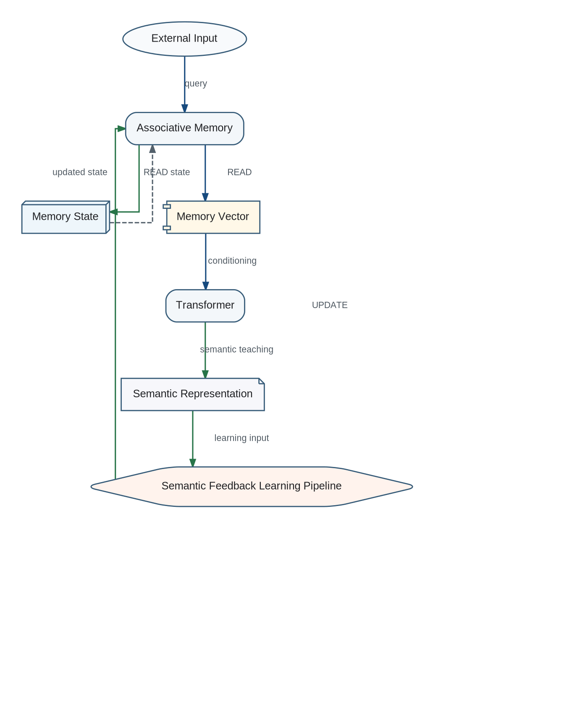

Transformer and Associative Memory are separated by responsibility but coupled by a closed semantic learning loop. The Transformer does not merely consume memory for reasoning; it teaches Associative Memory by producing the semantic objects used for learning.
Closed Semantic Learning Loop

READ contract
READ(Memory State, Query) -> Memory Vector
READ is a retrieval operation. It may expose context to the Transformer but never modifies Memory State.
UPDATE contract
UPDATE(Memory State, Semantic Representation) -> Updated Memory State
UPDATE is a learning operation. Its only architectural effect is modification of Memory State. It does not generate a new Memory Vector and performs no implicit retrieval. A Memory Vector is generated exclusively by a subsequent explicit READ operation.
Lifecycle and extension boundary
- Explicit READ retrieves a Memory Vector from the current Memory State.
- Transformer performs semantic reasoning using external input and retrieved context.
- Transformer acts as Semantic Teacher and produces a Semantic Representation.
- The Semantic Feedback Learning Pipeline submits that representation to UPDATE.
- UPDATE modifies Memory State only.
- Any effect of learning on retrieval is observed only by a later explicit READ.